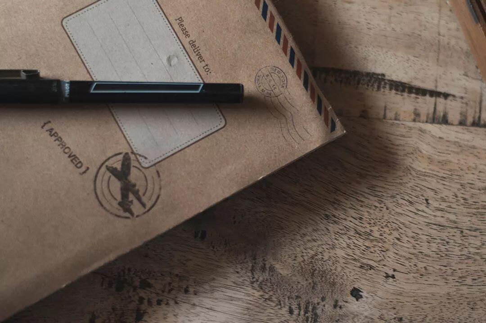
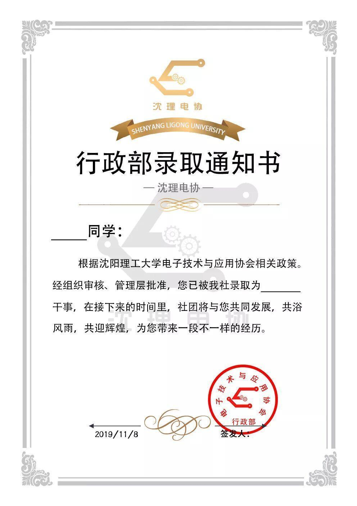
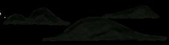
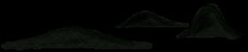

使用小程序

2019电协行政部录取结果
这里有拼搏奋斗的紧张环境,也有温馨的氛围和真挚的友情!祝愿大家在电协度过充实快乐的大学时光,希望大家在电协的路上一站到底!

你可以坐下来
为他人鼓掌
也可以在掌声中
一心向前
如果你畏惧
落后的滋味
那就请你先享受
接下来漫长的孤独
办公室
李嘉辰 栾鑫玉 孙全杰 王磊 温龙 吴宇航 张泽华
祝贺以上同学录取电协办公室,为了电协的明天，也为了成为更优秀的自己，希望大家努力学习,再接再厉!
人事部
付志宇 高博涵 刘义含 周礼 宋致宇
祝贺以上同学加入电协人事部,愿你们在今后的大学生活里更加充实快乐,未来道路宽敞顺畅。
信息部
刘鹏博 刘兆唯 孙恩汇 王杰 辛学敏 于建国
祝贺以上同学加入电协信息部,要更加努力，更加坚持，更加完善自我，在人生路上熠熠生辉。
财务部
冯光宇 谷岩松 霍长壮 罗旭涛 刘洋 邬承昊
祝贺以上同学加入电协财务部,愿你们步入社会后，回想在电协的日子都是快乐的。
外联部
董峻昊 孙彤 于芷川
祝贺以上同学加入电协外联部,意气风发的你们一定能在电协大展身手，创造佳绩，大家一起努力，为了理想，为了电协。
编辑:刘兆唯

